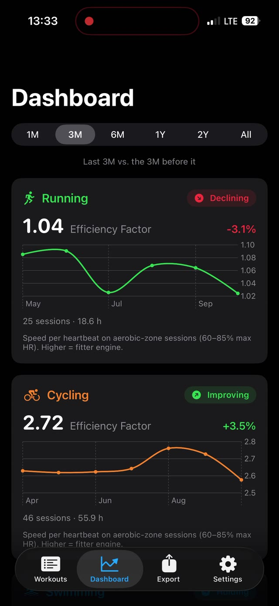
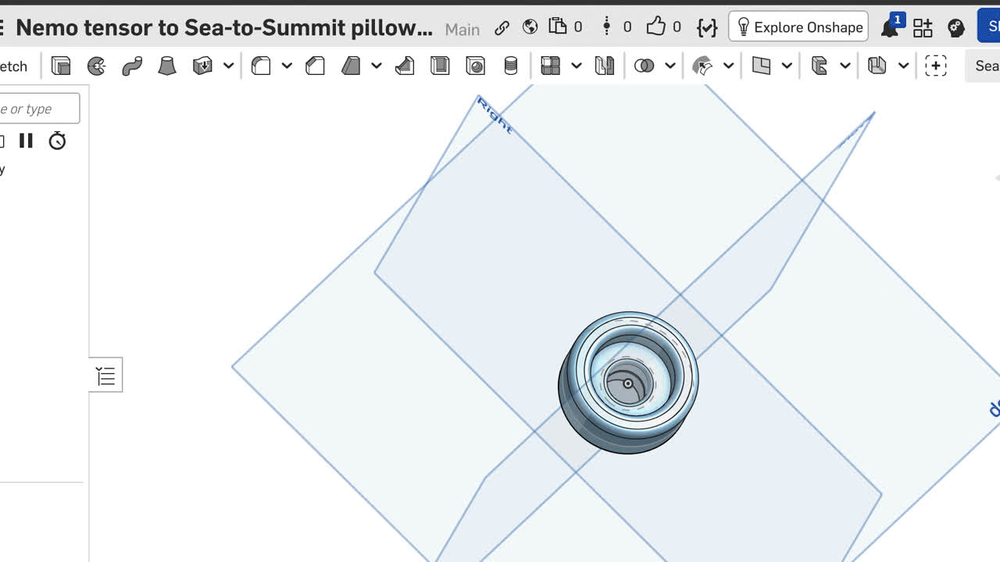
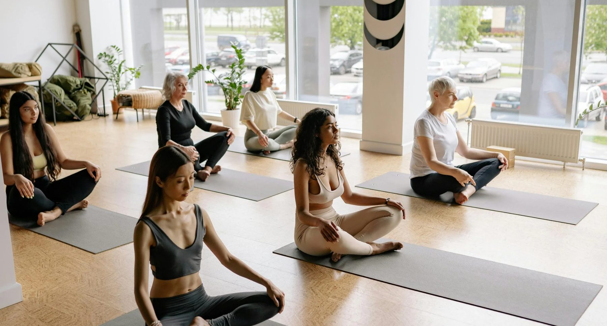
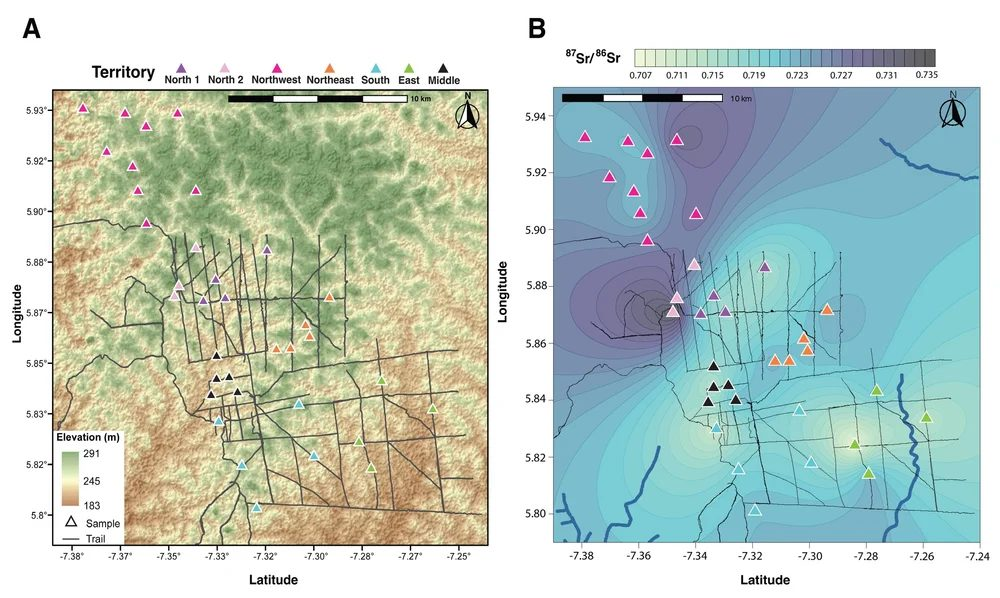

Work

PaceTrace
Designer & developer · iPhone app for Apple Health workouts

Custom gear adapters
Designer · Onshape CAD and 3D printing

Determining the most user-centric claim for value packs
Consumer insights data analyst · April 2024

Cleanliness in fitness studios
Consumer insights data analyst · December 2024

Redesigning product for evening use
Consumer insights data analyst · April 2024

Research projects
Researcher · published work and selected figures

Artwork | Mixed media
Designer · drawings and handmade cards